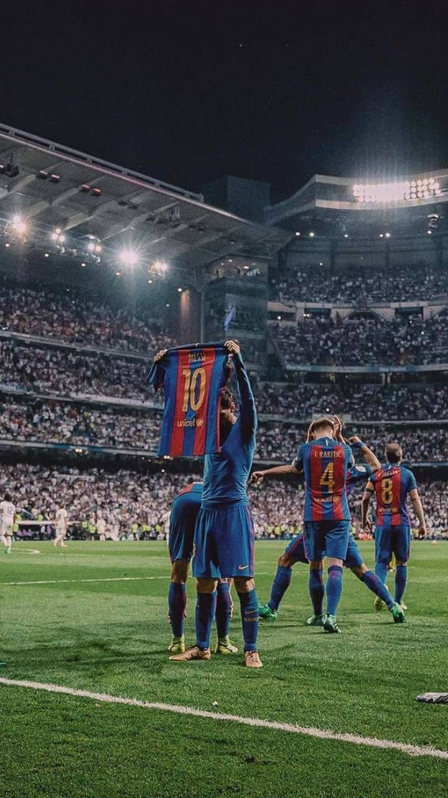

PLAYERS
GOALKEEPRS
DEFENDERS
MIDFIELDERS
FORWARDS
COACH

XAVI HERNANDEZ
THE GOAT (non c'é più)
 centrocampista o attaccante del Paris Saint-Germain e della nazionale argentina, di cui è capitano, con la quale si è laureato campione del Sud America nel 2021, vice-campione del mondo nel 2014 e ha vinto la Finalissima 2022.
Spesso paragonato al connazionale Diego Armando Maradona, è ritenuto uno dei più forti calciatori di tutti i tempi. È il terzo marcatore più prolifico della storia del calcio, il miglior realizzatore sudamericano delle nazionali di calcio e il miglior assist-man di sempre (382). I 41 trofei ufficiali vinti in carriera lo rendono il secondo giocatore per trofei vinti di squadra della storia. Rientra, inoltre, nella lista dei calciatori con almeno 1000 presenze in carriera. Detiene il record di gol segnati in competizioni ufficiali sia in una singola stagione (82 nel 2011-2012) sia in un anno solare (91 gol nel 2012). È inoltre il calciatore con i record di gol (32) e di assist (15) in finali in competizioni ufficiali.[
I 35 trofei vinti lo rendono il calciatore più decorato nella storia del Barcellona, club del quale detiene anche il record di presenze, gol e assist. Insieme a Luis Suarez e Neymar ha fatto parte del tridente (chiamato MSN dalle iniziali dei cognomi) più prolifico della storia del club[19] e del calcio spagnolo. È recordman nella Liga per gol e assist.
Con la nazionale argentina, in cui milita dal 2005 e della quale è primatista di presenze e di reti, ha partecipato a quattro campionati del mondo (2006, 2010, 2014 e 2018), raggiungendo la finale nel 2014, e sei edizioni di Copa América (2007, 2011, 2015, 2016, 2019 e 2021), vincendola nel 2021 e raggiungendo altre tre finali (2007, 2015 e 2016).
Detiene il record di assist nella storia della Copa América (17). Grazie al gol segnato alla Serbia e Montenegro ai mondiali 2006, all'età di 18 anni e 357 giorni, detiene il record di più giovane marcatore argentino in un campionato mondiale.
A livello individuale ha vinto sette volte il Pallone d'oro(2009, 2010, 2011, 2012, 2015, 2019 e 2021), sei volte la Scarpa d'oro (2010, 2012, 2013, 2017, 2018, 2019) e sei volte il premio come migliore giocatore al mondo FIFA[27] (2009, 2010, 2011, 2012, 2015, 2019); è stato inoltre nominato quattro volte miglior regista dell'anno (2015, 2016, 2017 e 2019), miglior regista del mondo della decade 2011-2020 e del periodo 2006-2020 dall'IFFHS . La stessa IFFHS lo ha eletto miglior calciatore del decennio 2011-2020 e per due volte miglior marcatore internazionale dell'anno (2011 e 2012). Nel 2011 e nel 2015 l'UEFA lo ha premiato come Men's Player of the Year. Inoltre la rivista inglese World Soccer lo ha eletto per 5 anni World Player of The Year.